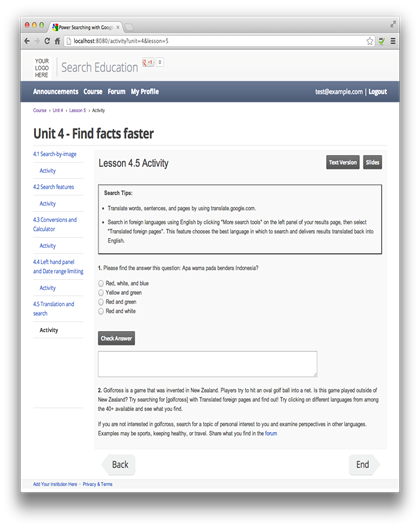
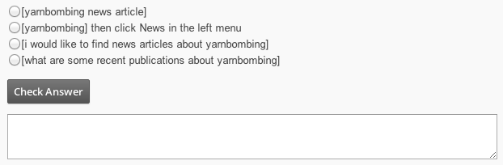
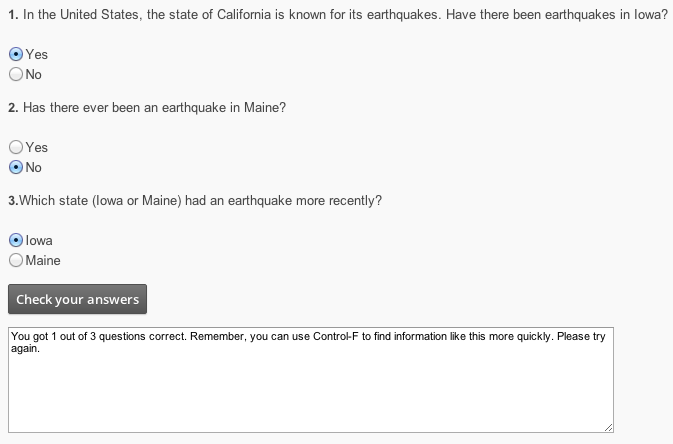
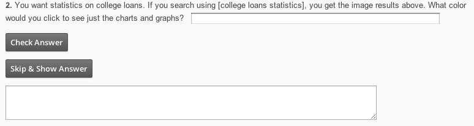

Cada unidad puede tener un cierto número de actividades. Una actividad es un conjunto de preguntas relacionadas con una lección particular dentro de una unidad:

Esta página habla de la mecánica de la creación de una actividad. Para obtener información sobre qué poner en sus actividades, vea Desarrollar el contenido sin la tecnología.
Una página de actividad permite a los estudiantes explorar su comprensión del contenido de la lección. Los estudiantes responden preguntas sobre la página de actividades. Para cada pregunta, haga clic en Comprobar Respuesta les permite saber si su respuesta es correcta. Si la respuesta es incorrecta, la respuesta puede contener orientación hacia la respuesta correcta. Para obtener respuestas que tengan un estudiante escriba una cadena, la cuestión puede incluir un botón extra para dar una pista. Si los estudiantes clic en ese botón, la respuesta correcta aparece, posiblemente con alguna explicación de por qué es la respuesta correcta.
Normalmente, una página de actividades contiene la lista de preguntas con respuestas posibles, un botón submit, y un área en la que el curso muestra las respuestas. Usted puede, sin embargo, incluyen HTML arbitrario en cualquier lugar de la página de actividades. Por ejemplo, como se ilustra en la imagen de arriba, las actividades en el transcurso de la muestra siempre comienzan con una caja que contiene consejos que resumen los puntos principales de la lección correspondiente.
Una página de actividad tiene el mismo aspecto general y se siente como una lección página. La aplicación utiliza varios archivos para hacer esta página:
Una actividad que contiene un texto explicativo y una o más preguntas para el estudiante.
La actividad de una lección en particular va en el correspondiente archivo JavaScript. El nombre de archivo JavaScript es actividad-NM. Js,donde N es el número de unidad y M es el número de la lección.
El formato del fichero es
var = actividad [
entry1,
...,
entryN
]
El archivo contiene una sola matriz variable de actividad con nombre. Cada elemento de la matriz es HTML arbitrario, una pregunta, o información de respuesta.
Aunque parece que las preguntas y sus respuestas están conectados entre sí, el código no hace cumplir esto. El código sólo hace que los elementos de la matriz después de la otra. Depende de usted para asegurarse de que están en un orden lógico.
La primera opción para un elemento de la matriz es una cadena que contiene un conjunto de elementos completos de HTML. Es decir, si la cadena contiene una etiqueta HTML abierto (como <em>), sino que también debe tener la correspondiente etiqueta de cierre (tal como </ em>).
El código simplemente hace que el HTML que puedes entrar. Por ejemplo, las actividades de la muestra todas empiezan con una mesa 1-célula que resume los puntos principales de la lección correspondiente. Con este HTML:
"<table Border="2"> <tr> <td> Consejos <b> búsqueda: </ b> <p> <ul> <li> En el último video, usted
Aprendí a usar el color filtrado en la búsqueda de imágenes para reducir los resultados de imagen a
imágenes compone principalmente de un color determinado. Para ello, haga clic en el
casilla correspondiente de color en el panel izquierdo. <li> Por favor, tenga en cuenta que no se puede filtrar
por el color en las tabletas iPad o Android, pero usted puede contestar a las siguientes preguntas
si se utiliza un ordenador portátil o de escritorio. </ ul> <p> </ tr> </ td> </ table> <br/> ',
El código de muestra lo siguiente:
|
Sugerencias de búsqueda:
|
Nota: Este código de ejemplo y otro contiene saltos de línea dentro de una cadena de JavaScript para mejorar la legibilidad. Usted no puede hacer eso en el código. Cada cadena debe estar en una sola línea.
Por lo que el código se refiere, no hay diferencia entre una pregunta y cualquier otra cadena HTML arbitrario. La diferencia está sólo en que siga una pregunta con respuesta información .
Si desea numerar las preguntas, debe incluir los números en el código HTML. Por ejemplo, con las siguientes dos cadenas HTML:
"Src='assets/img/Image1.1a.png' <p> <img height=450 width=785> </ p>",
'<p> <b> 1. </ B> ¿Quieres que vuelva a leer un libro de texto de introducción a la contabilidad de
escuela, pero no puedo recordar el título exacto. Usted recordará que la cubierta está
amarilla y tiene piezas del rompecabezas en ella. En la imagen de arriba, donde se hace clic en
filtrar los resultados con el fin de localizar el libro? </ p> ',
El código de muestra lo siguiente:
... La imagen...
1. ¿Quieres que vuelva a leer un libro de
texto de introducción a la contabilidad de la escuela, pero no recuerdo el
título exacto. Ustedes recuerdan que la
cubierta es de color amarillo y tiene las piezas del rompecabezas en él. En la imagen de arriba, donde se hace clic para filtrar
los resultados con el fin de localizar el libro?
La posibilidad final para una entrada en la matriz de la actividad es un objeto JavaScript que representa la información de respuesta.Dependiendo del tipo de respuesta, esta información puede tener varias formas. El objeto contiene propiedades tales como el tipo de pregunta, una expresión regular que indica la respuesta correcta, o una cadena para mostrar en caso de que cualquiera de las respuestas correctas o incorrectas o para mostrar cuando el estudiante pide ayuda.
Una cuestión puede ser uno de tres tipos:
El código de una sola pregunta de opción múltiple es similar al ejemplo siguiente:
{QuestionType: "elección múltiple",
opciones: [
['[Reportaje yarnbombing]', false,
"Inténtalo otra vez. Este es un enfoque de riesgo, ya que muchos artículos de noticias no se hacen llamar \ 'artículos de noticias \' en la página. '],
['[Yarnbombing] y luego haga clic en Noticias en el menú de la izquierda', true,
"¡Correcto! Usando una colección de un tipo específico de medios de comunicación, como News, le puede ayudar a llegar a las mejores páginas más rápido. '],
['[I gustaría encontrar artículos de noticias acerca de yarnbombing]', false,
"Inténtalo otra vez. Queremos evitar que incluye un montón de palabras adicionales, confusos en una consulta. '],
['[¿Cuáles son algunas publicaciones recientes sobre yarnbombing]', false,
"Inténtalo otra vez. Afirmar lo que quiere de este modo, presenta una gran cantidad de palabras adicionales en una consulta. ']
]
}
Este código representa un único objeto de JavaScript con dos atributos requeridos. El primer atributo es questionType. "Elección múltiple"El valor indica que esta respuesta es para una pregunta de opción múltiple. El segundo atributo es elegir. El valor de este atributo es una matriz de las posibles respuestas a la pregunta y qué hacer con cada uno.
Cada elemento de la matriz de decisiones en sí es una matriz de 3 elementos cuyos valores requeridos son los siguientes:
Para esta pregunta, los estudiantes ver lo siguiente:

Los estudiantes pueden ver una lista de posibles respuestas, un botón llamado Verificar respuesta, y un cuadro de texto vacío. Al elegir una de las respuestas y haga clic en Respuesta Check, el código muestra la cadena asociada a esa respuesta. En este ejemplo, si el usuario envía la respuesta [yarnbombing noticia], se muestra el código Inténtelo de nuevo. Este es un enfoque de riesgo, ya que muchos artículos de noticias no se autodenominan 'noticias' en esta página.
Si los estudiantes eligen la respuesta correcta, el código también se resalta la línea que contiene la respuesta.
A veces quieres agrupar un conjunto de preguntas de opción múltiple para que los estudiantes sólo pueden revisar sus respuestas después de contestar todas las preguntas en el grupo. Usted puede hacer esto con el código que se parece al siguiente ejemplo:
{QuestionType: "grupo de opciones múltiples",
questionsList: [
{
questionHTML: '<b> 1 </ b> En los Estados Unidos, el estado de California es conocido por sus terremotos.. ¿Ha habido terremotos en Iowa? <br/> ',
opciones: ['Sí', 'No'],
correctIndex: 0
},
{
questionHTML: '.? <b> 2 </ b> ¿Ha habido alguna vez un terremoto en Maine <br/>',
opciones: ['Sí', 'No'],
correctIndex: 0
},
{
questionHTML: '.? <b> 3 </ b> ¿Qué estado (Iowa o Maine) tenían un terremoto más recientemente <br/>',
opciones: ['Iowa', 'Maine'],
correctIndex: 1
}
],
allCorrectOutput: '. Esperemos que utiliza Control + F para encontrar la información rápidamente ",
someIncorrectOutput: "Recuerde, usted puede usar Control-F para buscar este tipo de información con mayor rapidez. Por favor, inténtelo de nuevo. '
}
Este código representa un único objeto de JavaScript con cuatro atributos necesarios:
Para este ejemplo, si los estudiantes contestar una pregunta correctamente, verá lo siguiente:

El último tipo de respuesta es un área de texto libre. Utilice este tipo de respuesta cuando la pregunta es un tanto ampliable. Los alumnos escriben su respuesta en un cuadro de texto de un tamaño que especifique.
El código utiliza una expresión regular para verificar la respuesta. Las expresiones regulares pueden ser notoriamente difícil para un programador para hacerlo bien. Por esta razón, es necesario tener mucho cuidado con la redacción de una pregunta que tiene una respuesta de texto libre.Su expresión regular tiene que dar cuenta de las variaciones razonables en las respuestas de los estudiantes. El código para una respuesta de texto libre simple es el siguiente:
{QuestionType: 'texto libre',
correctAnswerRegex: / blanco / i,
correctAnswerOutput: ". Correcto - muchos gráficos, tablas y gráficos tienen fondos blancos, por lo que el filtrado de imágenes en blanco y le ayuda a encontrar más rápido",
incorrectAnswerOutput: ". Inténtelo de nuevo Considere qué color serían dominantes en imágenes de gráficos, tablas y gráficas Mira los resultados anteriores Cada una de estas fuentes es tradicionalmente impresos en papel..."
showAnswerOutput: "Nuestra búsqueda experta dice: yo tendría que hacer clic en el blanco de la cuadrícula de color, ya que muchos gráficos, tablas y gráficos tienen fondos blancos." },
Este código representa un objeto de JavaScript individual con varios atributos. Las dos primeras son necesarios, los otros son opcionales.

Los cambios realizados en cualquier archivo en el directorio de puntos de vista aparecerá automáticamente en el servidor de desarrollo corriendo. Es decir, después de realizar un cambio en uno de estos archivos, simplemente cargar (o recargar) una página que utiliza este punto de vista y el cambio aparece.
Para ver cómo hacer estos cambios en tu vida, desplegada por supuesto, consulte Despliegue su aplicación.
Un par de consejos para la depuración de JavaScript: